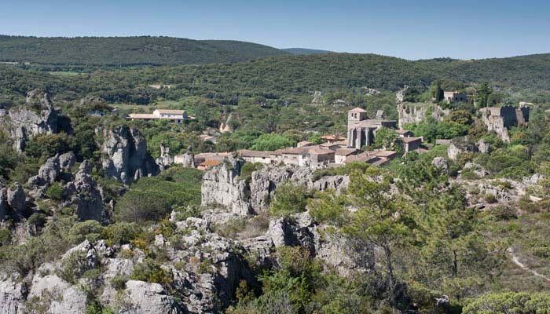
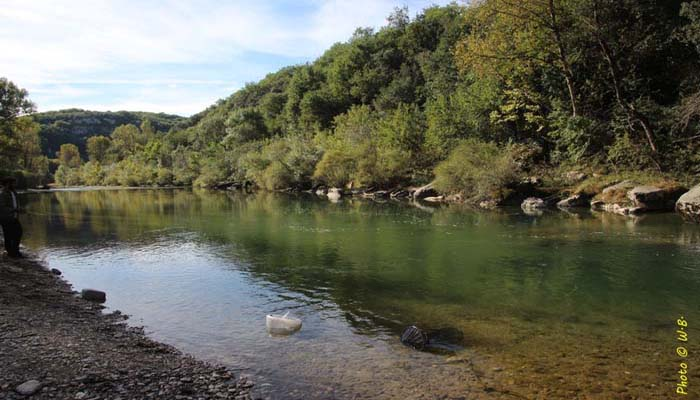
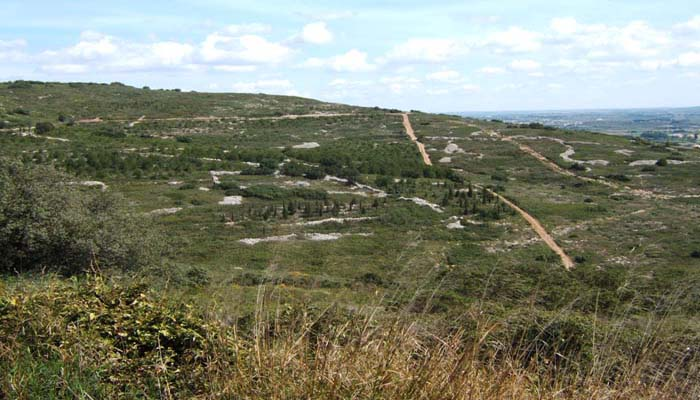
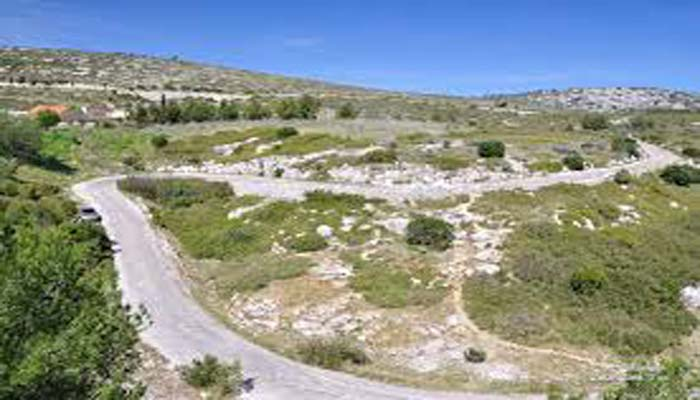
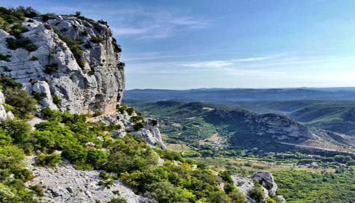
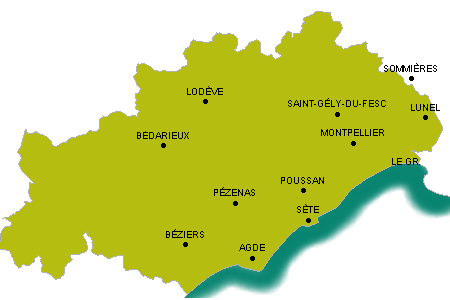

ACCUEIL
Bienvenue à l’association randonnée de l’Hérault, votre guide pour des aventures inoubliables sur les sentiers les plus époustouflants.





Explorez nos sentiers soigneusement sélectionnés, adaptés à tous les niveaux de randonneurs, et découvrez la beauté naturelle de l'Hérault avec nous. Que vous soyez un randonneur débutant ou expérimenté, nous avons l'itinéraire parfait pour vous.

Laissez nos guides expérimentés vous emmener explorer beaucoup d’autres superbes paysages
dans notre magnifique département à travers des randonnées exceptionnelles.